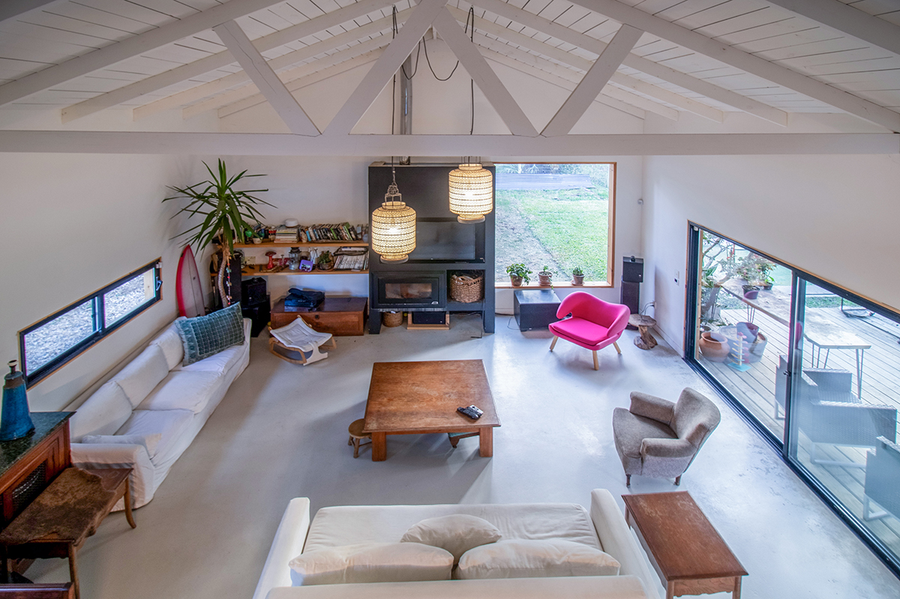
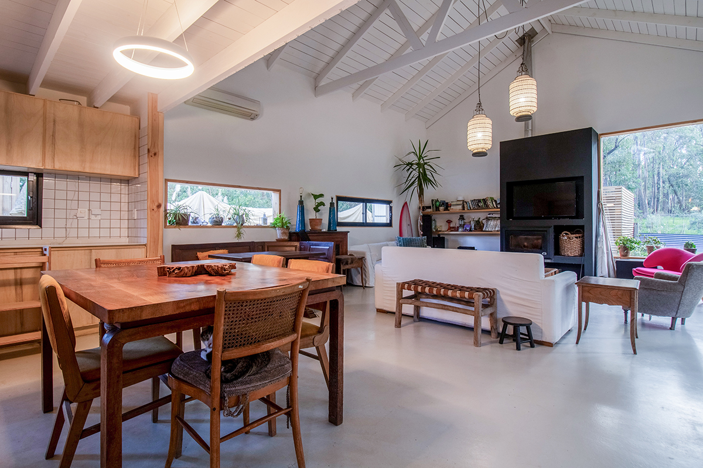
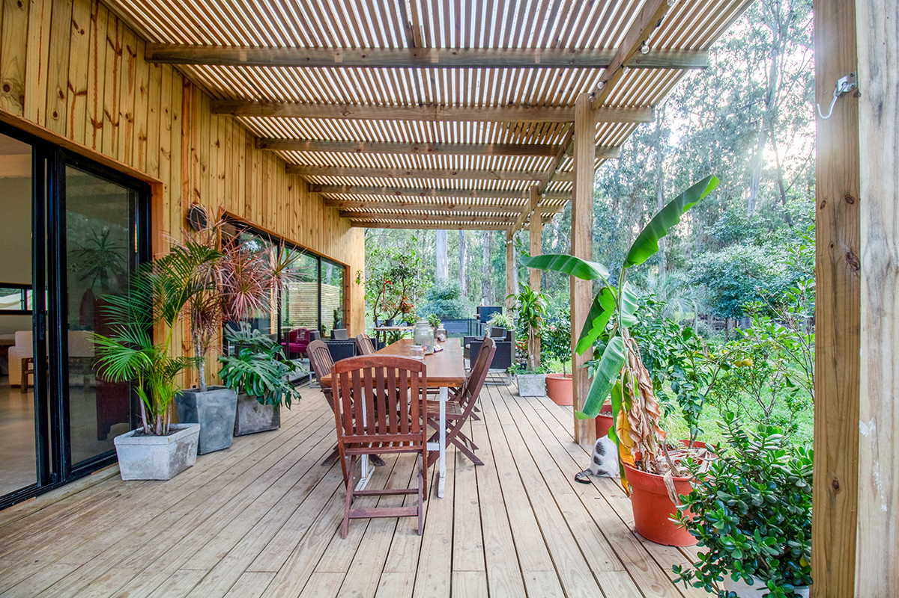
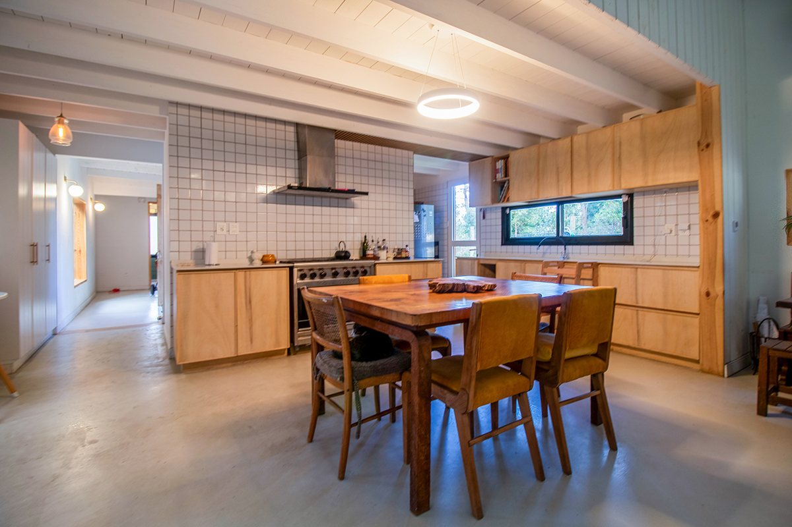
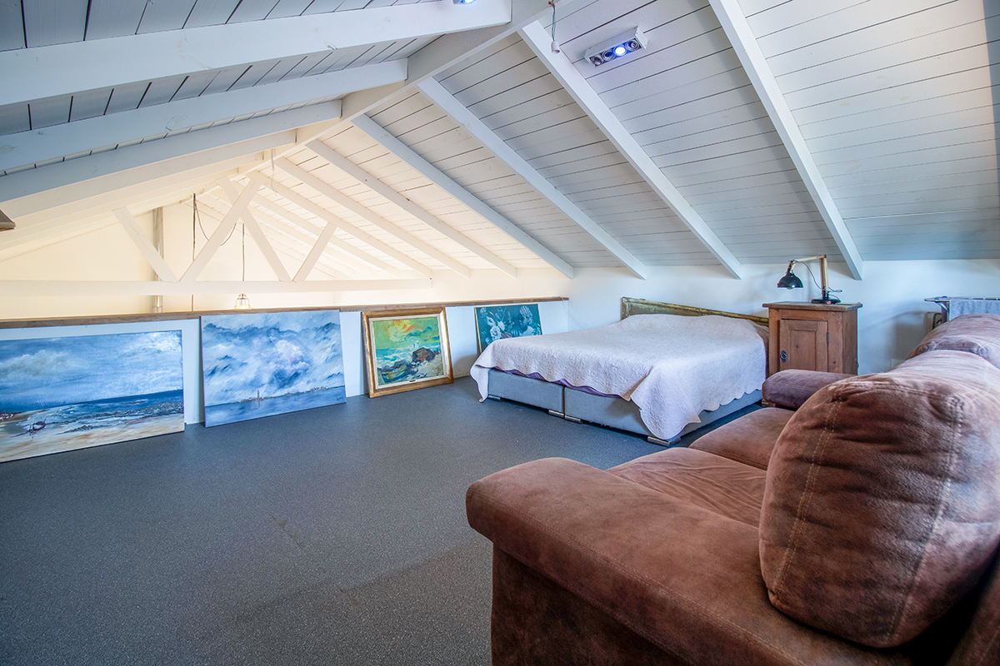
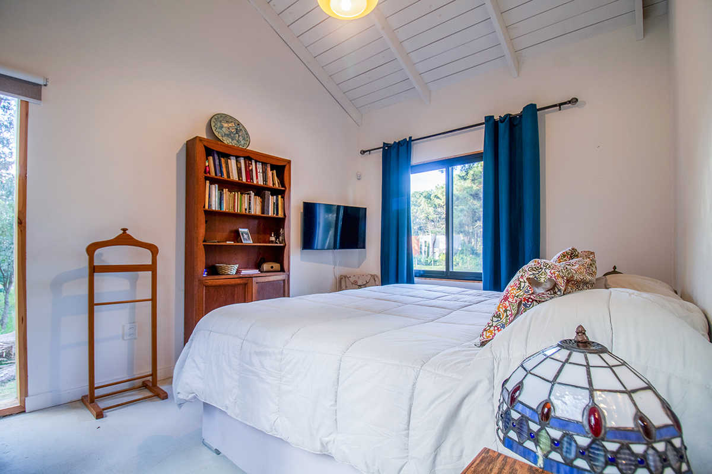

¿Quién soy?
¡Hola! Me llamo Martina Schroder, una entusiasta en diseño, fotografía y desarrollo web.
Soy mamá de una niña hermosa que me enloquece y me alegra la vida.
Hablo Español y Aleman desde que nací, y lucho por aprender el Inglés.
En este momento trabajo felizmente como Fotógrafa de “Broker Real Estate”, llevo 2 años trabajando en este rubro, y la verdad que me encanta. Prefiero la fotografía Real Estate porque no tienes prisa ni se queja si no estuviste en el momento preciso para sacar la foto.
¿Qué he hecho?
A continuación les contaré un poco de lo que he hecho hasta ahora.
-
Diseñadora Gráfico
Branding para emprpesas, creación de identidad visual, diseño de logotipos, flayers e invitaciones.
-
Serigrafía y Sublimación
Creamos un emprendimiento de impresión sobre textiles, cerámicas y otros materiales. En este proyecto diseñamos y creamos una nueva imagen para “Punta Ballena”, en la cual utilizamos figuras simples que representan nuestra zona.
-
Community Manager
Estrategias de marketing digital, gestión de redes sociales, devolución de análisis de datos del mes y creación de contenido (diseños, fotografia o audiovisual).
-
Fotografía
Consiste en capturar en fotografías la casa o apartamento de manera atractiva, destacando sus características y detalles para su promoción y venta en medios impresos y digitales.
-
Desarrollador Web
Entusiasta de diseño y desarrollo web utilizando HTML y CSS (por ahora).
Fotografía Real Estate





